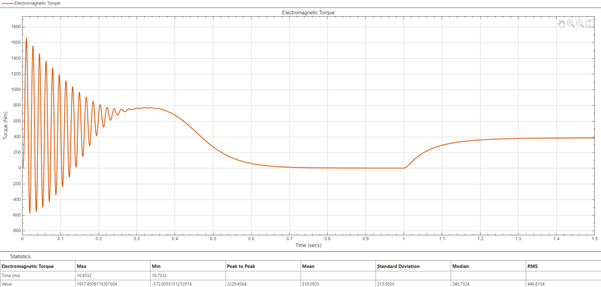
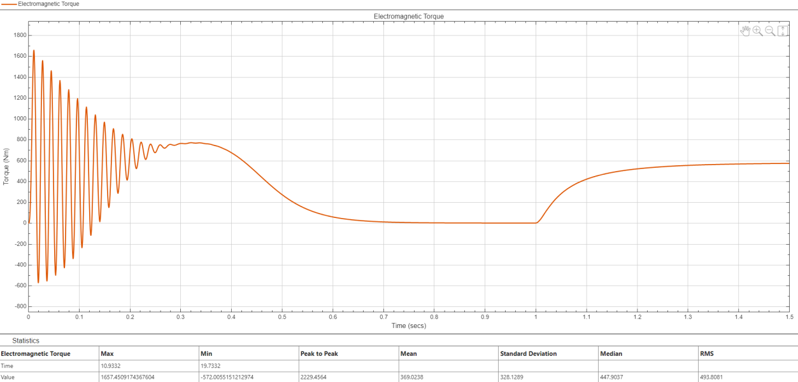
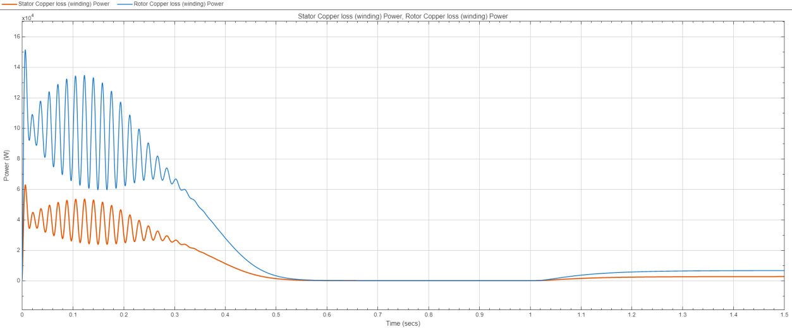
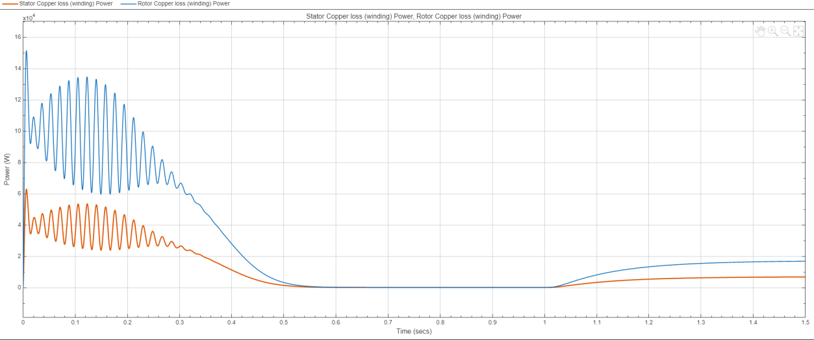
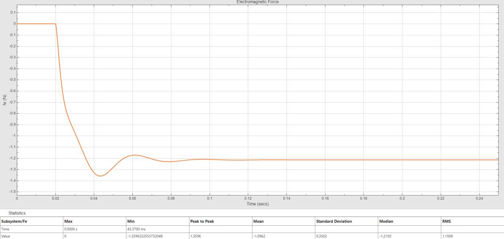
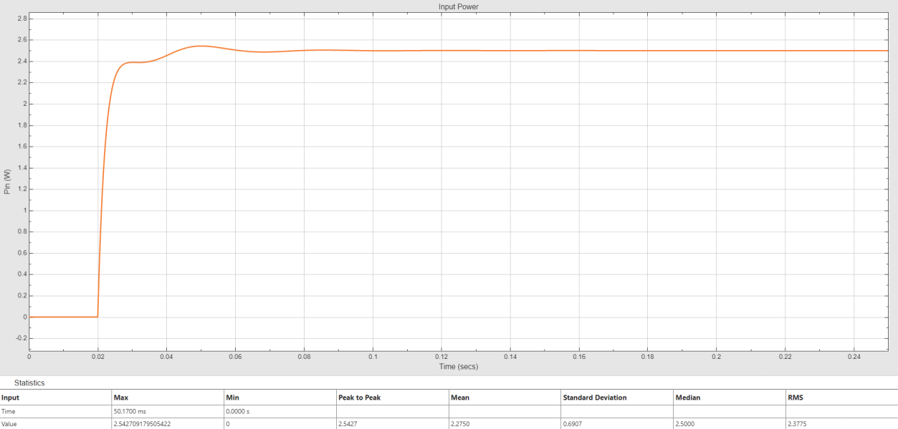

Project overview
The work investigated induction-machine and linear electromagnetic-machine behavior in MATLAB/Simulink. Analytical magnetic-circuit studies complemented the simulations.
I evaluated electrical and mechanical transients, compared loaded operating points, and examined power flow and winding losses.
My contribution
- Built and analyzed MATLAB/Simulink machine models for the coursework studies.
- Evaluated startup current, electromagnetic torque, load-step response, and winding losses.
- Derived magnetic-circuit and equivalent-circuit quantities to connect physical parameters with model behavior.
Induction-machine study
The induction-machine assignment used a qd0 formulation to examine stator and referred-rotor currents, electromagnetic torque, and rotor motion.
| Parameter | Configuration |
|---|---|
| Nominal rating | 50 hp, approximately 37.3 kW |
| Rated voltage / poles | 460 V RMS line-to-line / 4 poles |
| Simulation duration | 1.5 s |
| Maximum solver step | 10 μs |
| Load application | 1.0 s |
| Load torques | 385 and 577.5 N·m |

The reported startup current magnitude was approximately 694 A. Electromagnetic torque ranged from about −572 to +1,657 N·m, a peak-to-peak excursion of approximately 2.23 kN·m.
Response to mechanical loading
{kind=link}

{kind=link}

The loads represent 50% and 75% of the 770 N·m torque reference used in the submission. The shared initial startup explains why the startup peaks remain essentially unchanged between cases.
Winding-loss comparison
{kind=link}

{kind=link}

The modeled loaded operating points exceed the nominal machine power rating and are interpreted as overload studies. The analysis characterizes the simulated machine response.
Linear electromagnetic machine
A 5 V step was applied at 0.02 s with 10 Ω winding resistance, a 3 mm initial position, and zero external force.
{kind=link}

{kind=link}

Analytical foundations
Supporting calculations derived magnetic reluctance and winding inductance from geometry and permeability, examined the effect of a 2 mm air gap, and transformed coupled-winding equivalent-circuit parameters using the turns ratio.
Results and interpretation
Startup produced the largest transient current and torque excursions, while the load steps exposed how sustained torque demand changes winding losses. The linear-machine study linked electrical input with the force response.
The torque–speed plot is a startup trajectory rather than a steady-state performance map. The results characterize the supplied simulation cases and provide a foundation for control-oriented machine modeling.